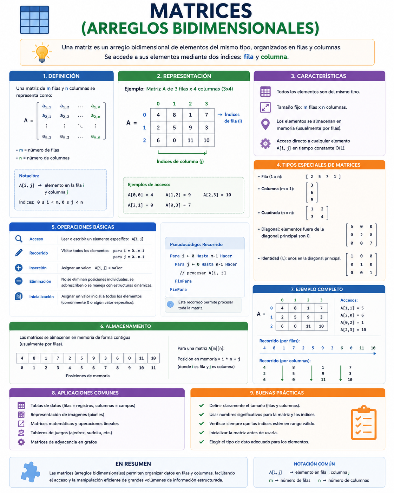

Una hoja de cálculo electrónica (como Excel) o el mapa de asientos de un teatro comercial se organizan de la misma forma: mediante filas y columnas. Si quieres ubicar un dato, no basta con dar un número; debes especificar dos coordenadas exactas, como "Fila 3, Columna 5". En programación, esta estructura se denomina Matriz y se utiliza para renderizar gráficos de videojuegos, pixeles de imágenes y mapas de coordenadas geográficas.
⚠️ Debes visualizar el video completo sin adelantar para desbloquear la evaluación.
Material audiovisual adaptado con fines estrictamente educativos. Créditos del autor: Retro.

Una matriz es una estructura de datos lineal extendida que organiza elementos homogéneos en una cuadrícula de dos dimensiones.
i, y el segundo corresponde a la columna j (ej: matriz[i][j]).Si una matriz llamada `mapa_estelar` se declara con dimensiones de 3 filas y 4 columnas, ¿cuántos elementos homogéneos totales puede almacenar en memoria RAM?
¿Qué sintaxis conceptual representa el acceso correcto al casillero ubicado en la fila 0, columna 2 de una matriz indexada?
Según lo explicado en el texto de la lección, ¿cuáles son los componentes espaciales que estructuran un arreglo bidimensional?
¿Qué significa el término "elementos homogéneos" dentro de la definición de una matriz de datos?
Para procesar o leer cada una de las posiciones de una matriz completa, ¿qué diseño algorítmico se requiere estructurar?
¿Cuál es el rol específico que ejecuta el bucle "Para" interno dentro del recorrido estándar de una matriz?
En la expresión `matriz[i][j]`, ¿qué coordenadas representan conceptualmente los identificadores `i` y `j` respectivamente?
De acuerdo con Joyanes Aguilar (2013), ¿cómo se define formalmente una matriz en la teoría algorítmica?
En aplicaciones de software real, ¿cuál de los siguientes ejemplos justifica directamente el uso de arreglos bidimensionales?
Si intentamos acceder a la coordenada `matriz[3][2]` en una cuadrícula declarada con 3 filas (de 0 a 2) y 3 columnas, ¿qué ocurrirá en el sistema?